MSX70
Ultrasonic Cleaner
A self-contained, single-tank ultrasonic cleaning system combining powerful ultrasonics and heating, controlled from a Kleentek MiSonics touch panel. Supplied and supported by Kleentek Australia.
Important — Read Before Operation
This manual covers the installation, safe operation and maintenance of your Kleentek Australia MSX70 ultrasonic cleaner (single tank version — no weir or filtration system). It documents the MiSonics touch-panel controller, running a cleaning cycle, the alarm list and the routine servicing requirements.
The instructions should be carefully studied by machine operators and service mechanics before the machine is operated. Operators should be familiar with Sections 2–5 before running a cycle; supervisors and service staff should also read Sections 6 and 9. Keep this manual with the machine.
Quick Start Guide
At-a-glance operation for trained operators. This is a summary only — read Sections 1–9 for full detail, safety information and troubleshooting before operating the machine.
1 · Placement & Power-Up
- Position on a level, well-ventilated surface and lock the castors.
- Connect the supplied plug — Single Phase, 10 A, 240 V, 50/60 Hz.
- Switch on at the outlet — the touch screen and red push button illuminate.
2 · Fill & Load
- Confirm the drain is closed, then fill to ~75% with water.
- Add the Kleentek cleaning chemical and top up until the level sensor is covered.
- Place parts in the basket provided — never directly on the tank base.
3 · Run a Cleaning Cycle
- Confirm tank temperature and level are correct.
- Press the MiSonics icon → select a program (1–4).
- Monitor process time, temperature and tank level on the main screen.
Won't Start? Check
- Tank level covers the level sensor
- Lid is closed
- No heater / ultrasonic contactor fault
Common Screens
Low Tank Level — fill the tank to cover the level sensor.
Lid Open — close the lid to commence the program.
Full alarm list: Section 5.1.
If an Alarm Appears
- Read the message and rectify the cause (Section 5.1).
- If unclear, contact Kleentek on 1300 79 73 79.
Safety Essentials
- Never immerse hands in the tank or cleaning solution.
- Some surfaces run hot (45–90 °C) — filter housings and internal pipe work.
- Only use Kleentek-formulated ultrasonic cleaning chemicals.
- Isolate the power before opening any panel or performing maintenance.
MSX70 Ultrasonic Cleaner — User Manual
This is the user manual for the MSX70 Ultrasonic Cleaner by Kleentek — Single Tank Version. This model does not contain a weir or filtration system.
To ensure your machinery operates at its full potential it is essential that this manual is read and adhered to. This manual provides details on how to install, operate and safely maintain the MSX70, and provides guidelines on how to check its performance and routinely care for your equipment to ensure long-lasting and efficient operation.
Support
Should you have any problems, questions or require further information, please feel free to contact us.
Australia wide: 1300 79 73 79 · International: +61 7 5479 0566
Revision 4 — last modified 15 January 2026. MSX70 Ultrasonic Cleaner - 1_en. Copyright to Total Tank Solutions Pty Ltd t/a Kleentek, ABN 66 122 438 457.
Safety
This section provides the information needed to ensure safe operation of the MSX70 Ultrasonic Cleaner.
2.1 System Documentation
Read this and any other accompanying manufacturers' manuals completely before installing or operating your cleaning system. This equipment should be installed, operated, and maintained only by competent and qualified personnel who are fully aware of potential hazards.
Warnings and cautions are for the protection of equipment, property and personnel. It is important to adhere to all Workplace Health and Safety (WH&S) policies and procedures. Personal Protective Equipment (PPE) may be needed relevant to warnings, cautions or instructions in this document.
2.2 Warnings and Cautions
- Do not open electrical enclosures or panels without first turning off power and isolating the machine. This should be done by qualified personnel only (e.g. a licensed electrician).
- Do not immerse hands or other parts of the body in the ultrasonic cleaning tank or the cleaning solution — risk of skin irritation from chemicals/contaminants and exposure to high-intensity ultrasonic energy.
- Ultrasonic energy is measurable by sound meters and OSHA sound constraints may apply — know your environment's sound levels and wear hearing protection if necessary.
- Be fully aware of a chemical's characteristics and health/safety issues before working with it. Wear suitable protective clothing and refer to the chemical SDS prior to use.
- Some surfaces run hot (45–90 °C) — the two stainless steel filter housings, associated pipe work on the side of the machine, and all internal pipe work behind service panels. Warning signage marks these locations. Wear protective clothing at high operating temperatures.
- Appropriate manual handling and lifting training must be given to all operator personnel.
- Do not operate this equipment unless installed in accordance with this manual.
- Be sure the system is connected to a power supply matching the ratings indicated on the system.
- Ensure the generator(s) are connected correctly and placed in a safe position.
- Do not operate the ultrasonic generators in ambient air temperatures above 45 °C.
- Do not attempt to operate the system unless the tank is filled to the appropriate level with water/cleaning solution.
- Never drop heavy objects into the tank. Always use a basket to raise or lower parts into the tank.
- Treat the tank with care — scratches or dents can reduce tank life.
- Do not operate the system for longer than necessary, and never with volatile, explosive, combustible or acidic liquids.
- Do not move the cleaning system without first draining the tank and disconnecting it from the power supply.
- Know the boiling point of the liquids in use and never allow them to boil, or run near boiling point — this can permanently damage the system and voids warranty.
- Maximum recommended fluid operating temperature is 40–70 °C.
- Only use Kleentek-formulated and approved ultrasonic cleaning chemicals to ensure optimal cavitation.
- Remove rings, watches and other jewellery/metallic objects before maintenance activities unless workplace procedures specifically allow it.
2.3 Safe Operation
The following precautions are general safety precautions — based on Workplace Health and Safety recommendations — that must be understood and applied across many phases of operation and maintenance to protect personal safety, health and property.
2.3.1 Cleaners / Chemicals / Personal Protection
Some cleaning agents and chemicals have adverse effects on skin, eyes and the respiratory tract. Observe manufacturers' warning labels and SDS instructions for proper handling, storage and disposal, and current safety directives. Use only as authorised, wear protective clothing as directed by the SDS, and consult the designated safety officer for specific protection equipment and ventilation requirements.
2.3.2 Lockout / Tag-out
Be aware of hazards associated with unguarded machinery parts, capacitors, gaseous and wet pipe systems, spring-loaded devices, etc. Lockout and tag-out the energy source prior to performing maintenance, adjustments, or other procedures that would bypass safety guards, barriers, or otherwise expose personnel to hazardous energy sources.
2.3.3 Live Circuits
Observe all safety requirements at all times. Do not replace components or make internal adjustments while the machine is connected to the electrical supply. Electrical charge is retained by capacitors — danger may exist even with system power off. Always turn off the power and unplug, then discharge and ground a circuit before working on or around it. Adhere to all lockout/tag-out requirements.
System Description
The MSX70 Ultrasonic Cleaner is a self-contained ultrasonic cleaner featuring powerful ultrasonics and heating.
3.1 Equipment Specification
| Ultrasonic tank | 316L Stainless Steel 2.0 |
| Ultrasonic tank dimensions | 600 × 400 × 300 mm (L×W×D) |
| Ultrasonic tank housing | Painted steel |
| Transducers | Chrome plated immersible transducer block |
| Ultrasonic power | 1,800 Watts / 40 kHz |
| Heaters | 2 × 1,800 Watts |
| Power supply | 10 Amp |
| Level protection | Main tank level sensor |
| Drains | Main tank manual ball valve |
| Liquid volume | Approx. 70 litres |
| Parts basket | S/S 316 woven mesh parts basket |
3.2 Overview
A general overview of the MSX70 is shown below. All side panels can be removed to access internal components.
3.2.1 Front View

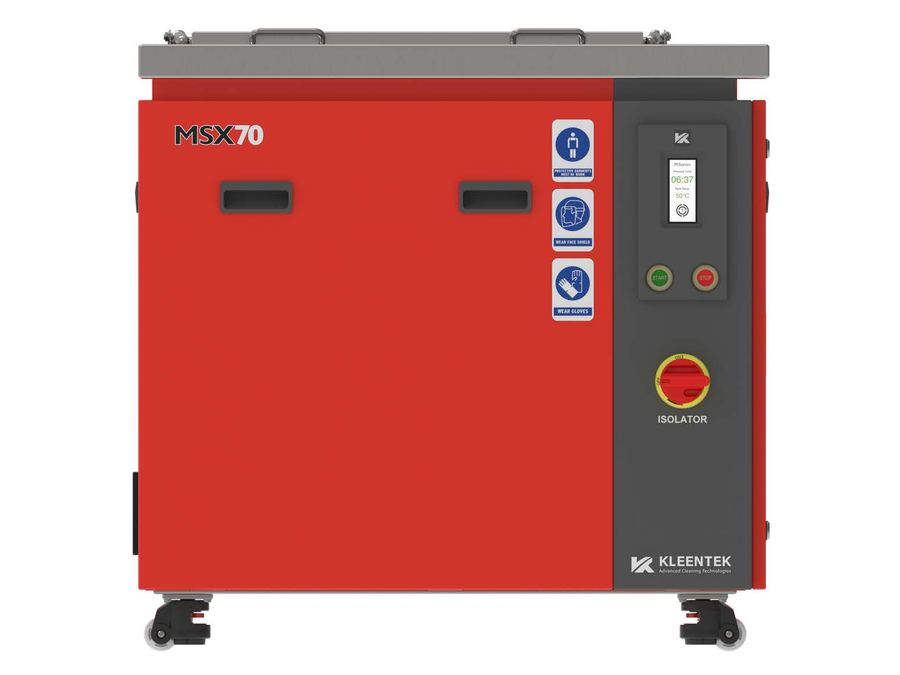
3.2.2 Right View
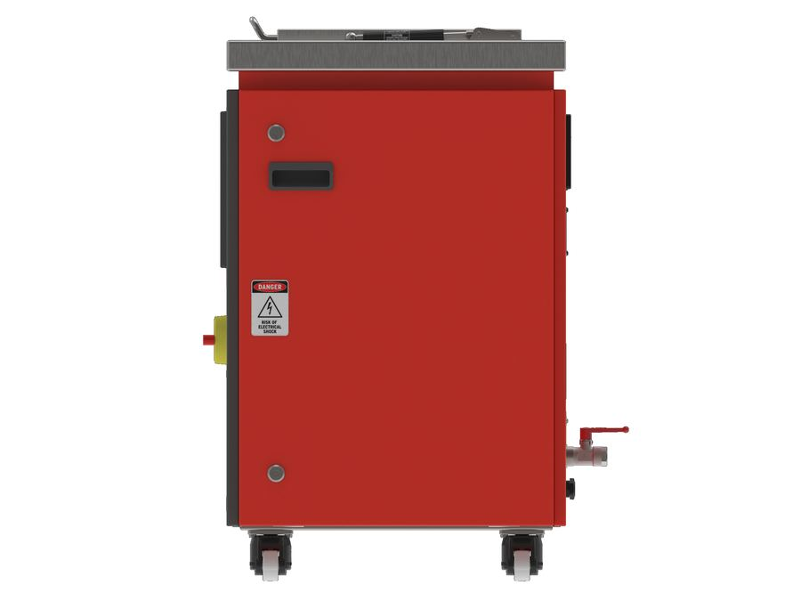
3.2.3 Top View
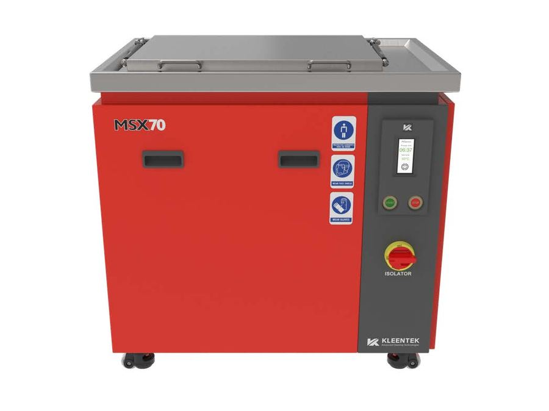
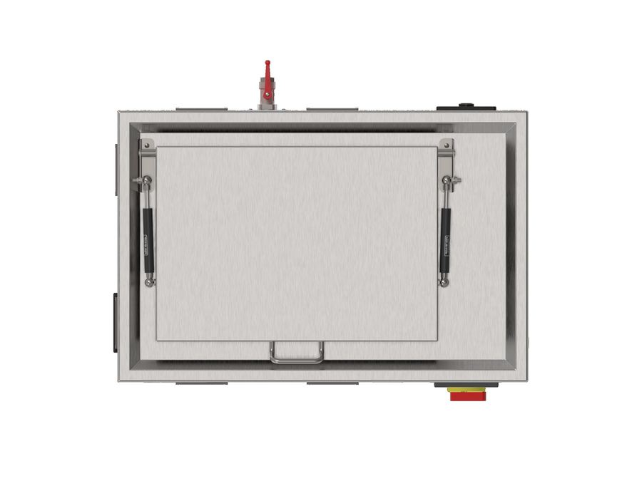
3.2.4 Rear View
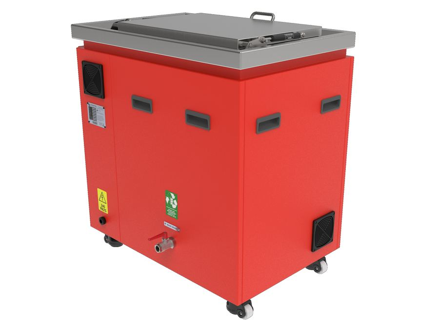
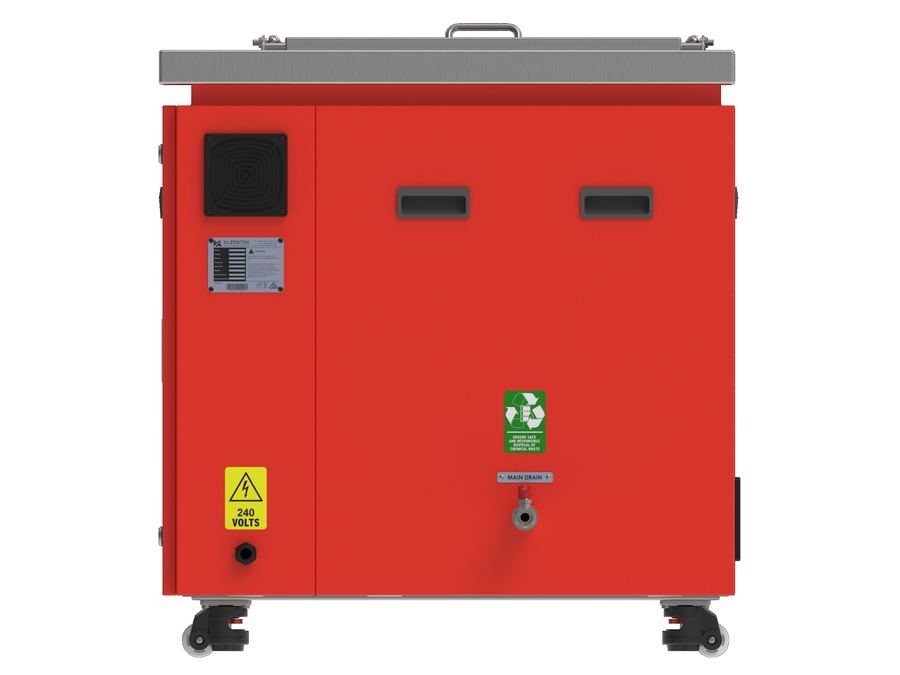
3.2.5 Left View
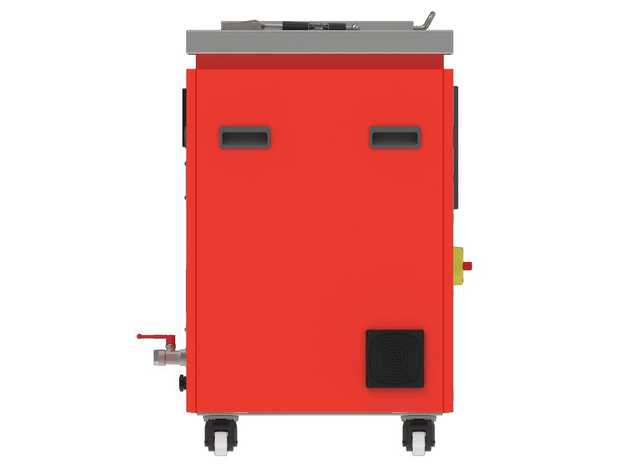
3.3 System Components
3.3.1 Generators
The MSX70 contains 1 × 1,800 Watt / 40 kHz generator, hard-wired directly into the system and located beneath the main ultrasonic tank. Each generator has one cooling fan at the rear of its casing, forming an integral part of its operation — the fan cycles on and off automatically to maintain generator temperature. Generators are accessible for maintenance by removing the front access panels.
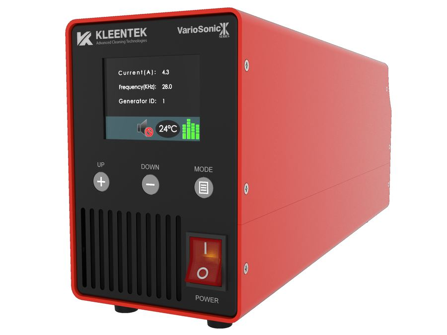
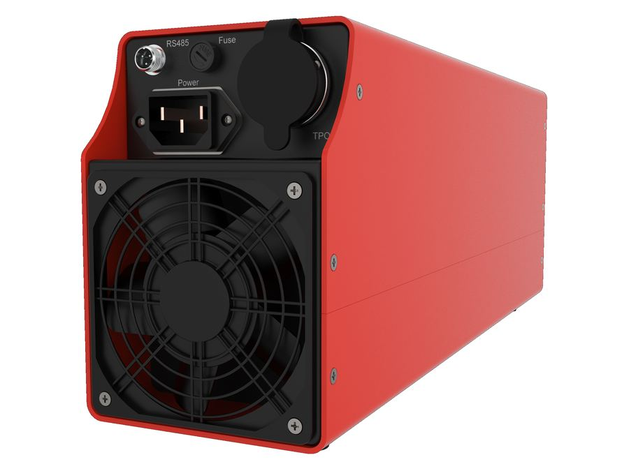
3.3.2 Transducers
High-performance ultrasonic cleaning is provided by a high quality chrome-plated stainless steel BLT immersible transducer block located on the bottom of the tank. Each transducer element is bonded to the radiating surface of the block, powered by the 1 × 1,800 Watt / 40 kHz ultrasonic generator.
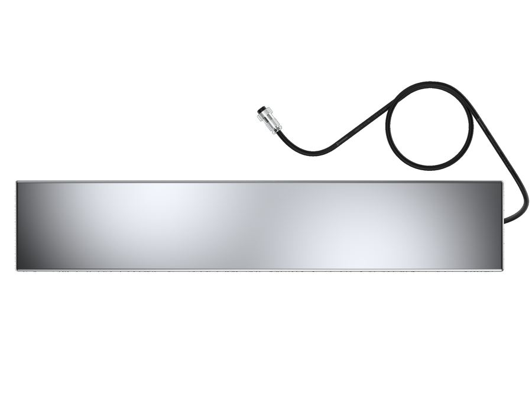
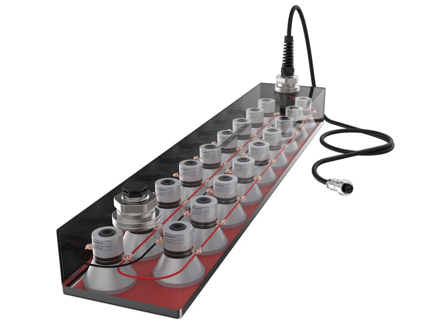
3.3.3 Level Sensors
A low liquid level can damage the ultrasonic transducers and heaters. Liquid level protection prevents the machine operating below safe operational levels. The system has one conductivity level sensor mounted in the probe pocket of the main tank. Level protection must be de-activated (i.e. the tank filled correctly) before the system can initially be used.
| Activated when | Liquid level in the main tank is below the level sensor |
| What happens | Ultrasonics and heaters are disabled |
| Deactivated when | Liquid level is at/above the level sensor |
3.3.4 Heaters
Heat is provided by stainless steel immersion heaters — 2 units, "pocket" mounted on each side of the tank, accessible by removing the front, left and right side panels. The MSX70 automatically heats and maintains the liquid at a set temperature via the temperature controller.
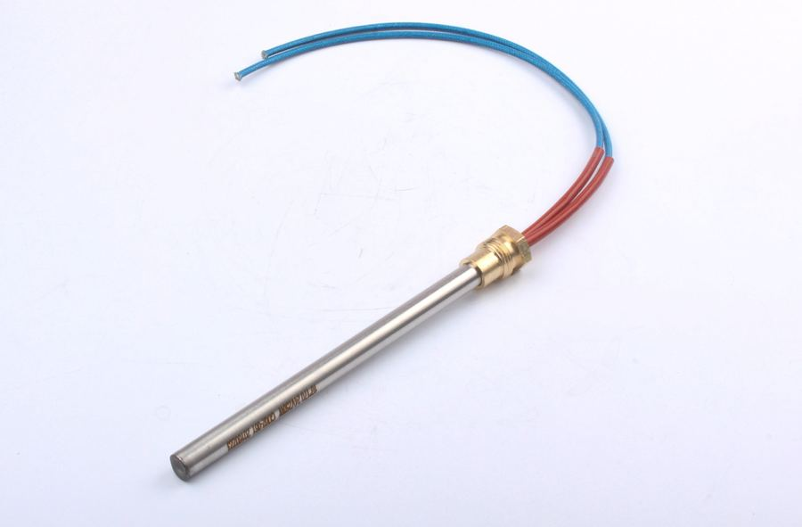
3.3.5 Drains
There is 1 drain valve on the MSX70, located on the rear of the unit and labelled appropriately. It is manually operated via a ball valve.
3.3.6 Baskets
A heavy-duty steel basket is supplied with the MSX70, with a load capacity of 100 kg. A variety of baskets can be used or custom-designed for specific cleaning applications — contact Kleentek for details.
Installation
The system is vulnerable to damage if installed incorrectly, and improper installation or use can compromise operator safety. Kleentek does not accept responsibility for the results of improper installation or use.
4.1 Receiving
Upon receiving the machine, first inspect the packaging thoroughly for transit damage. If damage is found, notify the carrier immediately. If the package is intact, unpack carefully and inspect the contents.
4.2 Placement
- Lift the machine carefully off the pallet/shipping packaging and ease it onto the floor.
- Place the machine in a well-ventilated area.
- Ensure the machine is level and positioned on a level surface.
- Lock the castor wheels to secure its position.
- Ensure there is sufficient space above the machine to open the lid.
- Ensure there is sufficient space above the machine for the basket to be removed and replaced safely.
4.3 Utility Connections
This section covers all utility connection requirements including power and drainage.
4.3.1 Power Connection
Electrical requirement: Single Phase, 10 Amp, 240 Volts, 50/60 Hz. A mains cable with the appropriate plug is supplied with the machine.
- Connect the plug to the power outlet only.
- Turn on the power supply from the power outlet.
- The LCD touch screen panel will illuminate.
- The red push button will illuminate.
4.3.2 Drain Connection
There is 1 drain on the MSX70 — the Main Tank Drain. Plumbing connections can be made to it; it is manually operated via a stainless steel ball valve. Take full account of all environmental, safety and other regulations when determining how to deal with drained liquids.
4.4 Machine Test & Setup
Due to possible transit damage, it is essential to conduct the following process when first setting up the MSX70.
Setup:
- Ensure all utility connections have been made correctly.
- Ensure the power is connected.
- Ensure all drains are closed.
Test:
- Ensure the external water supply is providing water to the system (if an inlet/auto-fill valve is part of the specification).
- While filling, carefully monitor the tank and cut off the water supply once the liquid reaches the designated level.
4.5 Filling the Tank
If filling for the first time, follow the Machine Test & Setup procedure above before ongoing operation.
- Fill the tank using a hose with water to approx. 75% full in the main tank.
- Add the chemical solution to the water.
- Top up the main tank to ensure the level sensor is covered.
4.6 Placing Items in the Tank
Always use the basket provided to contain all components being cleaned. If suspending a component from overhead, always ensure the basket is in the tank to prevent damage to the transducer blocks should the component be loaded incorrectly.
System Operation
5.1 Alarms
Example alarms that may arise on the MSX70, their meaning and the action to take:
| Alarm | Meaning & action |
|---|---|
| Low level in main tank | Heaters & ultrasonics will not function. Fill the tank until the level sensor is covered. |
| Max water temperature reached | Allow the solution to cool before continued use. |
| Heater contactor failure | Check the heater contactor. |
| Ultrasonic contactor failure | Check the ultrasonic contactor. |
| Liquid above set upper offset temperature | Allow the liquid to cool. |
| End of cycle / cycle complete | Press the reset button to continue. |
| Service is due | Contact Kleentek on 1300 79 73 79. |
5.2 Running an Ultrasonic Cleaning Cycle
- Ensure the tank temperature is within range to commence a cleaning cycle.
- Ensure the timer has been set to a time range associated with the cleaning application.
- Ensure the tank liquid level is at the correctly marked point.
- Ensure any parts are placed in the parts basket provided — items may be suspended in the tank, but the basket should still be placed in the tank to prevent damage to the ultrasonic transducer.
5.3 Using the MiSonics Controller — Quick Guide
How to use the Kleentek MiSonics controller.
5.3.1 Select a Program
Video walkthrough: youtube.com/embed/gEgQN2Oe42M. Click any image below to enlarge.
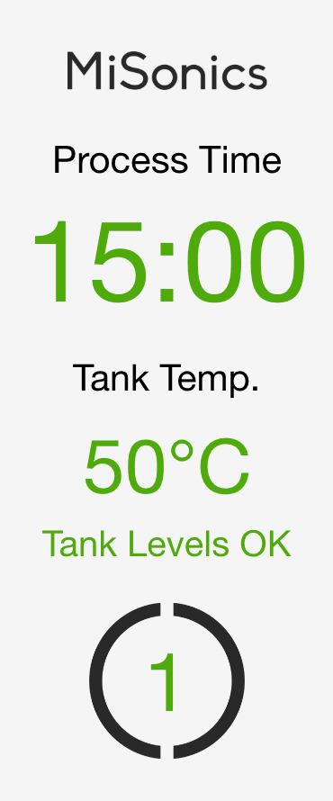
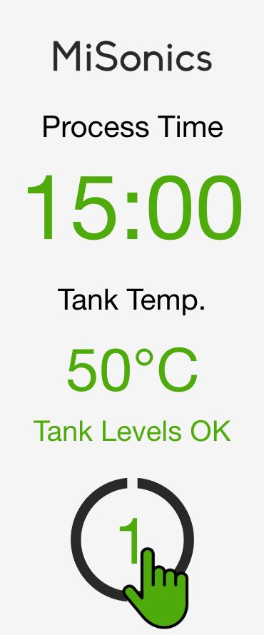
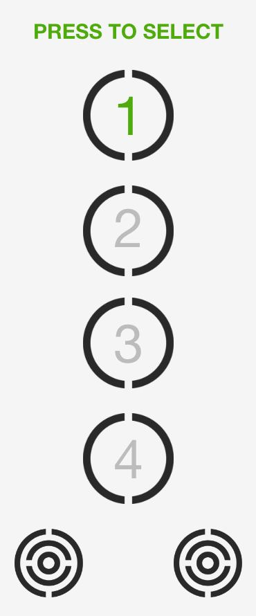
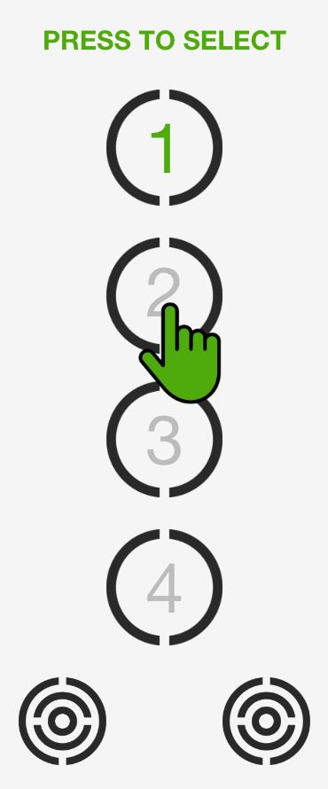
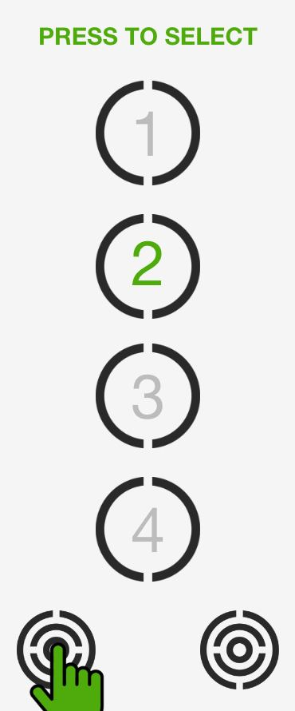
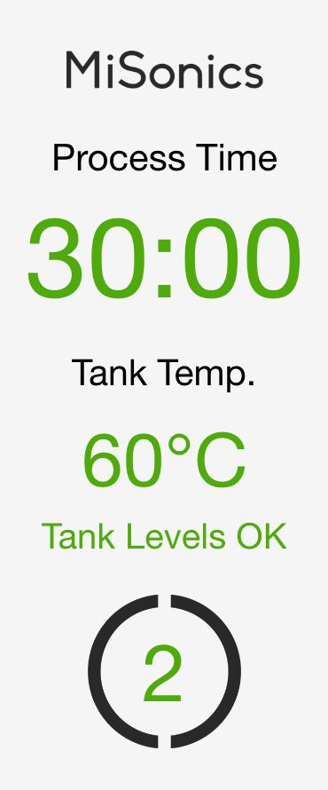
5.3.2 Edit a Program
Process runs left to right. Click the image to enlarge.
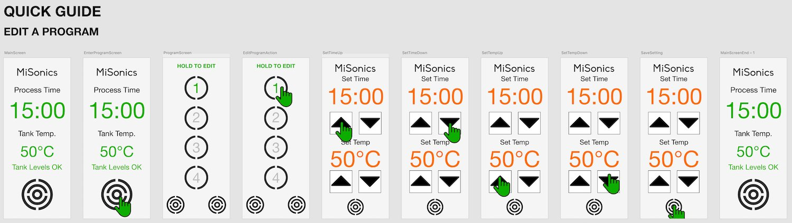
5.3.3 Deactivating the Lid Sensor
Process runs left to right. Click the image to enlarge.
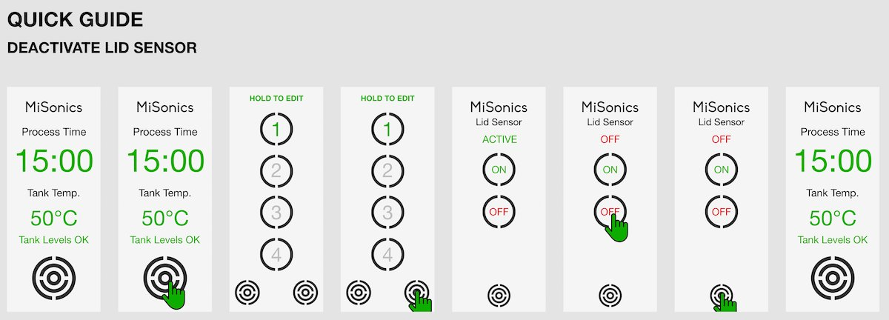
5.3.4 Activating the Lid Sensor
Process runs left to right. Click the image to enlarge.
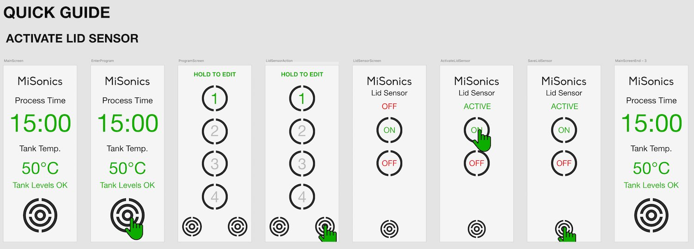
5.3.5 Warning / Error Screens
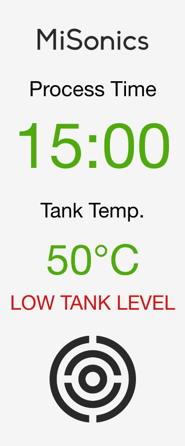
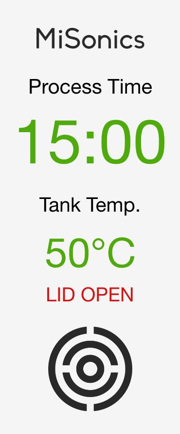
Maintenance
6.1 Preventative Maintenance
Because of the nature of the system, minimal preventive maintenance is required. Overall system operation is enhanced by regularly maintaining: the wash tank and the liquid level sensor probe.
6.2 Draining the Tank
The drain is manually operated through a stainless steel ball valve.
6.3 Heater Replacement
- Drain the tank.
- Turn off and lock out power to the system.
- Remove the supply wires (use appropriate electrical methods and adhere to electrical safety at all times).
- Check the heater with an ohmmeter.
- Unscrew the heater element and remove it.
- Install the replacement heater element.
- Replace the supply wires.
- Reconnect power to the system.
Ultrasonic Cleaning
Ultrasonic energy is sound beyond the range of human hearing — generally frequencies above 16,000 cycles per second (16 kHz). When a sound wave travels through a liquid, if it's strong enough it tears the liquid apart, forming tiny vacuum pockets called cavitation bubbles. These form during the negative-pressure part of the wave and collapse during the high-pressure part of the following wave, generating extremely high pressures and temperatures for a brief moment in a small volume of liquid.
The implosion energy comes from: compression from the ultrasonic wave, compression from surface tension in the bubble, and atmospheric pressure on the vacuum. If air is suspended in the liquid, it's released into the bubble and the implosion is greatly weakened — hence the importance of degassing (see 7.2).
Millions of cavitation implosions per second scrub the surface of any immersed object — faster and finer than any other scrubbing method, and able to reach into blind holes, complex shapes and surface pores. Cavitation is often strong enough to break the ionic bonds holding insoluble contaminants to a surface, and works particularly well with detergents, surfactants, terpenes, and aqueous/non-aqueous compounds.
7.1 Temperature
Temperature has a dramatic effect on the cleaning process — generally, higher temperature means higher cavitation intensity and better cleaning, as long as it's not too close to the liquid's boiling point. Temperature also affects the speed and effectiveness of chemical reactions (a caustic/water solution keeps increasing in chemical effectiveness right up to its boiling point). Some chemicals are designed for lower temperatures — running these too hot can cause chemical breakdown and ineffective cleaning. Contact Kleentek if you need help finding the best combination of chemistry, temperature and procedure.
7.2 Degassing
Liquids containing dissolved gas produce low cavitation intensity — the gas cushions the bubble's implosion. To eliminate dissolved gas:
- Heat the liquid a little higher than the planned operating temperature (warmer liquid retains less suspended gas).
- Add a detergent/cleaner with a wetting agent to speed up degassing.
- Run the ultrasonics for at least 10 minutes until air bubbles are no longer visible.
7.3 Parts Exposure
For a surface to be cleaned, it must be exposed to the ultrasonically-activated liquid — this requires proper placement in the parts basket. Common mistakes:
- Trapped air pockets — e.g. a blind hole facing down traps a bubble. Avoid by positioning parts carefully or rotating them once submerged.
- Overloaded baskets — only the outer layers of a densely packed basket get properly cleaned. Clean large numbers of small parts a few at a time using shorter cycles.
7.4 Parts Materials
Materials that absorb sound generally aren't suitable for ultrasonic cleaning, as they reduce cavitation intensity. Ultrasonics is highly effective on metals, glasses, ceramics and many plastics; less effective on fabrics, "soft" plastics, sponges or rubber (with exceptions — e.g. ultrasonics can improve the efficiency of dyeing artificial fabrics).
7.5 Liquid Levels
Ultrasonic sound waves reflect off the tank sides and the liquid surface, and this reflection behaves differently at different liquid depths. For critical cleaning applications, it may be necessary to experiment with liquid depth to optimise efficiency.
7.6 Cavitation Erosion
Over time, cavitation's scrubbing action wears away the surface of any object in the tank — including the tank itself, though that typically takes years. Softer metals (e.g. aluminium) erode faster than hard metals (e.g. stainless steel). To protect parts and equipment from untimely erosion, don't leave the ultrasonics running or parts in the tank longer than necessary.
Spare Parts
8.1 Consumables
Consumables and spares may vary based on the cleaning application. A summary of what may be required:
- Replacement filter cartridges / elements
- Chemicals
- Electrical contactors
- Titration kit — for testing chemical solutions
To order consumables, contact Kleentek on 1300 79 73 79.
8.2 Long Term / Critical Items
Certain components are considered critical for essential and efficient operation. Keep these on hand (where possible) to limit machine downtime:
- LCD control panel
- TekFlow pump and pump seal kit
- TekFlow heater
- TekFlow filter cartridges (varies by cleaning application)
Preventative Maintenance (Specific)
Maintenance described here should be performed at intervals matched to equipment usage, unless otherwise indicated.
Keep It Clean
A preventive maintenance program relies on visual inspection — keep equipment clean and accessible. Ensure access panels aren't blocked by obstructions (walls, posts, etc). Inspect the unit for damage or misaligned parts. Keep castors locked during operation, and side panels in place to protect components and the operator.
Recommended Maintenance Cycle
Visual inspection for damage, misaligned parts and plumbing leaks. Clean out the gross contaminant basket. Replace system filter(s). Check and maintain cleaning fluid concentration. Clean the exterior with a damp cloth.
Drain the tank and remove/wash out contaminant sludge from the base of the tank and weir. Wash the chamber interior with mild detergent, rinse with tap water — no abrasive pad on the base. Wipe down and clean the sensors.
Remove panels and check for plumbing leaks and pinhole tank leaks. Check wiring is dry and corrosion-free. Inspect the pump, transducers, heaters and sensors. Clean the interior with compressed air. Verify the LCD temperature reading with a thermometer.
Filter Replacement
Some models do not feature filtration. Longevity of the cleaning fluid depends on effective filtration — the longer the solution lasts, the less it costs to operate the system. Filters become contaminated and clogged during operation; replacement frequency depends on usage and contaminant level. Weekly replacement is recommended for heavy use, or as required.
- Lower the level of the chemical solution in the main tank to below the level of the pump sparger.
- Unscrew the fastening nut on top of the filter (tools may be required).
- Hold the bottom of the filter housing while loosening the fastening nut, so it doesn't fall or drop off.
- Empty the contents of the filter into a bucket or suitable container.
- Remove the old filter from the housing and dispose of it correctly (see safe disposal of consumables).
- Clean and rinse the filter housing, ensuring no contamination remains.
- Insert a replacement filter cartridge.
- Align the filter housing with its lid, ensuring the thread and fastening nut align, and tighten.
Cleaning the Tank
A build-up of sludge on the base of the tank inhibits transducer output and can accelerate cavitation erosion around the transducers. This is a natural byproduct of ultrasonic cleaning and will eventually cause the tank to leak if left unmanaged. Institute regular tank cleaning to remove abrasive particles, drain the machine regularly, and remove sludge — frequency depends on the quantity of contaminant introduced. The tank wall can be washed down with a degreaser.
Oil Skimming
Some models do not feature oil skimming or filtration. Certain cleaning applications remove oil as a contaminant, trapped in the triple weir system. Excess oil/grease can be drained manually from the drain labelled "Oil Skimmer", located on the bottom right-hand side of the machine. Wash the chamber interior with mild detergent and rinse with tap water — do not use an abrasive pad on the base of the cleaner. Clean the exterior of the tank with a damp cloth and a gentle degreaser.
Complete Manual (PDF)
Download the entire manual as a single, print-ready A4 PDF.